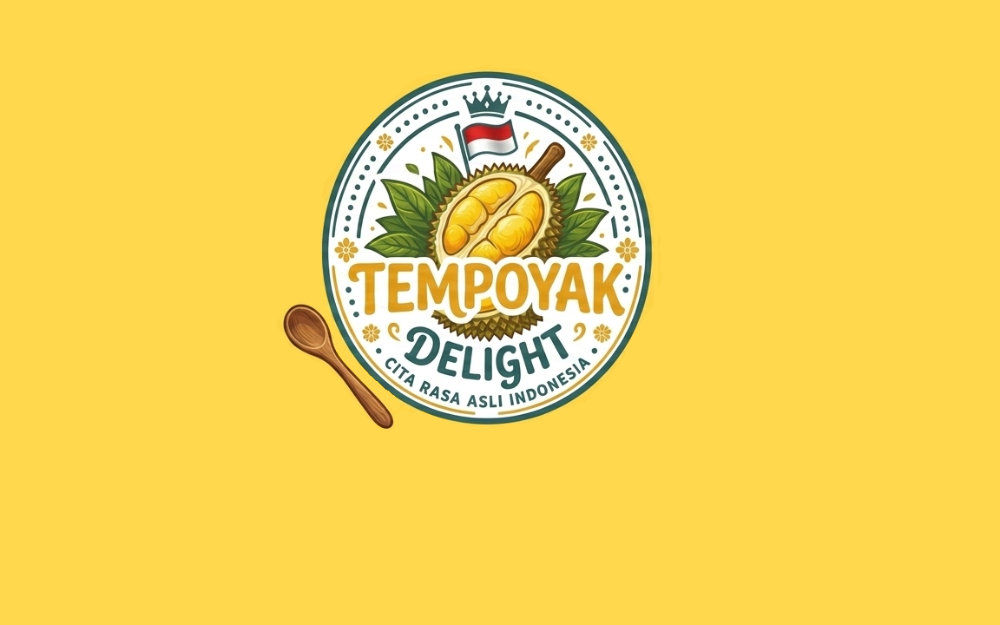

Proyek Fermentasi Durian Menggunakan Jenis Durian Bukit Tinggi dan Majalengka
Tempoyak adalah jenis makanan khas etnis Melayu di pulau Sumatra dan Kalimantan. Makanan ini terbuat dari durian yang sudah melalui proses fermentasi. Makanan ini biasanya dikonsumsi sebagai lauk yang dicampur dengan sambal saat menyantap nasi. Cita rasa tempoyak adalah asam karena terjadinya proses fermentasi daging buah durian. Selain itu, tempoyak juga bisa dijadikan bumbu masakan.
Dalam proyek bioteknologi ini dilakukan pengamatan terhadap proses fermentasi tempoyak untuk memahami bagaimana mikroorganisme bekerja dalam mengubah bahan makanan menjadi produk baru.
Bioteknologi adalah cabang ilmu yang memanfaatkan makhluk hidup (bakteri, jamur, virus) atau bagian dari makhluk hidup (sel, enzim, jaringan) melalui teknik modern maupun konvensional untuk menghasilkan produk atau jasa yang bermanfaat bagi manusia.
Fermentasi tempoyak terjadi karena aktivitas bakteri asam laktat yang secara alami terdapat pada buah durian. Mikroorganisme ini mengubah gula yang terdapat dalam durian menjadi asam laktat. Proses ini menyebabkan perubahan rasa, aroma, dan tekstur sehingga menghasilkan tempoyak yang memiliki cita rasa asam yang khas.